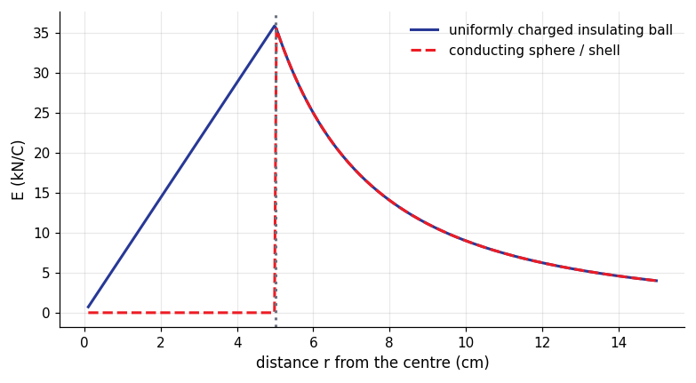
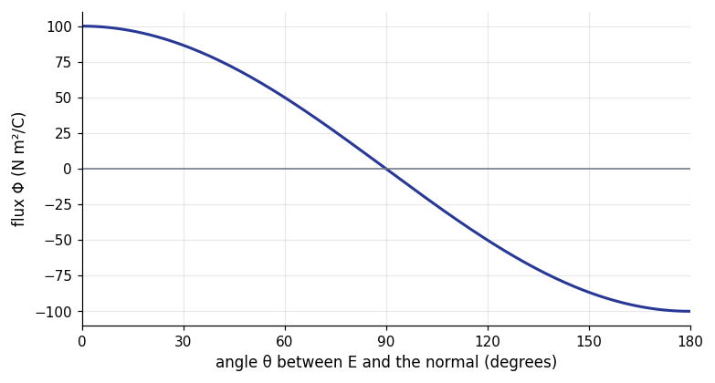
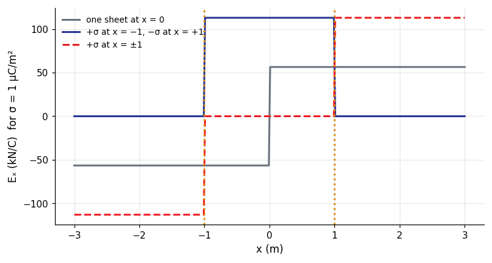

How it is asked: Sphere inside a conducting shell; Field of a long charged cylinder.
Gauss's law and symmetry: method and traps
Method
Pick the Gaussian surface from the symmetry.
Find the enclosed charge $Q_{enc}$ at the radius asked (partial for a volume charge).
$E\cdot A_{surface}=Q_{enc}/\varepsilon_0$ and isolate $E$.
Watch out
Only the charge inside the Gaussian surface counts.
Inside a conductor shell region $E=0$.
Conductors in electrostatic equilibrium and charged plates
Inside a conductor $E=0$ and excess charge sits on the surface; just outside $E=\sigma/\varepsilon_0$; two opposite parallel plates give $E=\sigma/\varepsilon_0$ between and $0$ outside.
Key formulas
conductor surface $E=\dfrac{\sigma}{\varepsilon_0}$; cavity with charge $+Q$: inner surface $-Q$; parallel plates $E=\dfrac{\sigma}{\varepsilon_0}$, each plate gives $\dfrac{\sigma}{2\varepsilon_0}$
How it is asked: Field between and outside two plates; Charge on the inner surface of a shell.
Conductors in electrostatic equilibrium and charged plates: method and traps
Method
$E=0$ in the metal ⇒ Gauss gives the induced charge on the inner surface.
Charge conservation gives the outer surface charge.
Two sheets: superpose $\pm\sigma/2\varepsilon_0$ in each region.
Watch out
Doubling the charge on both plates doubles the field between them (not four times).
Field of a charged sphere: insulating ball and conducting shell

Total charge $Q=10\,\mathrm{nC}$, radius $R=5\,\mathrm{cm}$. Outside, both give $kQ/r^2$. Inside the uniform ball $E=kQr/R^3$ grows linearly; inside the conductor the field is zero (all the charge sits on the surface).
Electric flux through a flat surface against its orientation

Uniform field $E=500\,\mathrm{N/C}$ and area $A=0.20\,\mathrm{m^2}$: $\Phi=EA\cos\theta$ with $\theta$ the angle between $\vec E$ and the normal. Maximum $100\,\mathrm{N\,m^2/C}$ face-on, zero edge-on, negative when the normal points against the field.
$$\Phi_E=\int\vec E\cdot d\vec A=EA\cos\theta$$
Field of infinite charged sheets (superposition)

Each sheet gives $\sigma/2\varepsilon_0$ pointing away from it (if positive). Opposite sheets $\pm\sigma$: the fields add between them ($\sigma/\varepsilon_0$) and cancel outside. Equal sheets: the opposite.
Practice bank, filtered to this chapter, then written mode
Question analyser: paste a question to see the concepts, formulas and traps
Then the mock exams (Exams page)
Plots and data files
4 plots, each computed from the physical law and checked a second way (numerical integration, an ODE solver, a second formula); the CSV beside each plot holds the numbers behind it, so you can re-plot or fit them. Download all 4 CSV files of this module (zip)
Field of a charged sphere: insulating ball and conducting shell Total charge $Q=10\,\mathrm{nC}$, radius $R=5\,\mathrm{cm}$. Outside, both give $kQ/r^2$. Inside the uniform ball $E=kQr/R^3$ grows linearly; inside the conductor the field is zero (all the charge sits on the surface). 300 rows · columns: r_m, E_insulating_NC, E_conducting_NCCSVElectric flux through a flat surface against its orientation Uniform field $E=500\,\mathrm{N/C}$ and area $A=0.20\,\mathrm{m^2}$: $\Phi=EA\cos\theta$ with $\theta$ the angle between $\vec E$ and the normal. Maximum $100\,\mathrm{N\,m^2/C}$ face-on, zero edge-on, negative when the normal points against the field. 181 rows · columns: theta_deg, flux_Nm2CCSVField of infinite charged sheets (superposition) Each sheet gives $\sigma/2\varepsilon_0$ pointing away from it (if positive). Opposite sheets $\pm\sigma$: the fields add between them ($\sigma/\varepsilon_0$) and cancel outside. Equal sheets: the opposite. 601 rows · columns: x_m, E_single_NC, E_opposite_NC, E_equal_NCCSVField of a long uniformly charged cylinder Charge per length $\lambda=2\,\mathrm{nC/m}$, radius $R=2\,\mathrm{cm}$: inside $E=\lambda r/(2\pi\varepsilon_0R^2)$ (linear), outside $E=\lambda/(2\pi\varepsilon_0r)$ (inverse), continuous at the surface. 300 rows · columns: r_m, E_NCCSV
Worked examples from the course problems
Worked example 1 · Gauss' law (Homework session 2, Q3)
Two very long parallel lines of charge are $8.0\,\mathrm{cm}$ apart: line 1 has $+6.0\,\mu\mathrm{C/m}$ (at $x=0$) and line 2 has $-2.0\,\mu\mathrm{C/m}$ (at $x=8.0\,\mathrm{cm}$). At what $x$ along the line joining them is the net field zero?
Show the answer and the solution
Answer: $12\,\mathrm{cm}$
Between the lines both fields point the same way (away from the positive line, towards the negative one), so they cannot cancel there. Cancellation needs a point beyond the line with the smaller $|\lambda|$.
At $x>8.0\,\mathrm{cm}$: $\dfrac{\lambda_1}{x}=\dfrac{|\lambda_2|}{x-L}$, i.e. $\dfrac{6.0}{x}=\dfrac{2.0}{x-0.080}\Rightarrow x=0.12\,\mathrm{m}=12\,\mathrm{cm}$.
Worked example 2 · Charged plates and conductors (Homework session 2, Q4(c))
Two large thin metal plates are parallel and close together; on their inner faces they carry excess surface charge densities of equal magnitude $7.00\times10^{-22}\,\mathrm{C/m^2}$ and opposite sign. What is the field magnitude BETWEEN the plates?
Show the answer and the solution
Answer: $7.91\times10^{-11}\,\mathrm{N/C}$
For a conductor the field next to the surface is $\sigma/\varepsilon_0$, and between oppositely charged plates the fields of the two plates add: $E=\dfrac{\sigma}{\varepsilon_0}=\dfrac{7.00\times10^{-22}}{8.85\times10^{-12}}=7.91\times10^{-11}\,\mathrm{N/C}$ (zero outside the plates).
Worked example 3 · Gauss' law (Homework session 2, Q2(b))
A long thin-walled metal tube of radius $R=3.00\,\mathrm{cm}$ has a charge per unit length $\lambda=2.00\times10^{-8}\,\mathrm{C/m}$. What is the field magnitude at radial distance $r=2.00R$?
Show the answer and the solution
Answer: $5990\,\mathrm{N/C}$
Outside the tube a Gaussian cylinder encloses $\lambda\ell$: $E=\dfrac{\lambda}{2\pi\varepsilon_0r}=\dfrac{2.00\times10^{-8}}{2\pi(8.85\times10^{-12})(0.0600)}=5.99\times10^{3}\,\mathrm{N/C}$.
Worked example 4 · Charged plates and conductors (Homework session 2, Q5(a))
Two large parallel non-conducting sheets carry identical positive uniform surface charge densities $\sigma=1.77\times10^{-22}\,\mathrm{C/m^2}$. What is the field magnitude ABOVE both sheets (outside)?
Show the answer and the solution
Answer: $2\times10^{-11}\,\mathrm{N/C}$
Each sheet gives $\dfrac{\sigma}{2\varepsilon_0}$, directed away from it. Outside both sheets the two fields point the same way and add: $E=\dfrac{\sigma}{\varepsilon_0}=\dfrac{1.77\times10^{-22}}{8.85\times10^{-12}}=2.00\times10^{-11}\,\mathrm{N/C}$. Between the sheets they cancel.